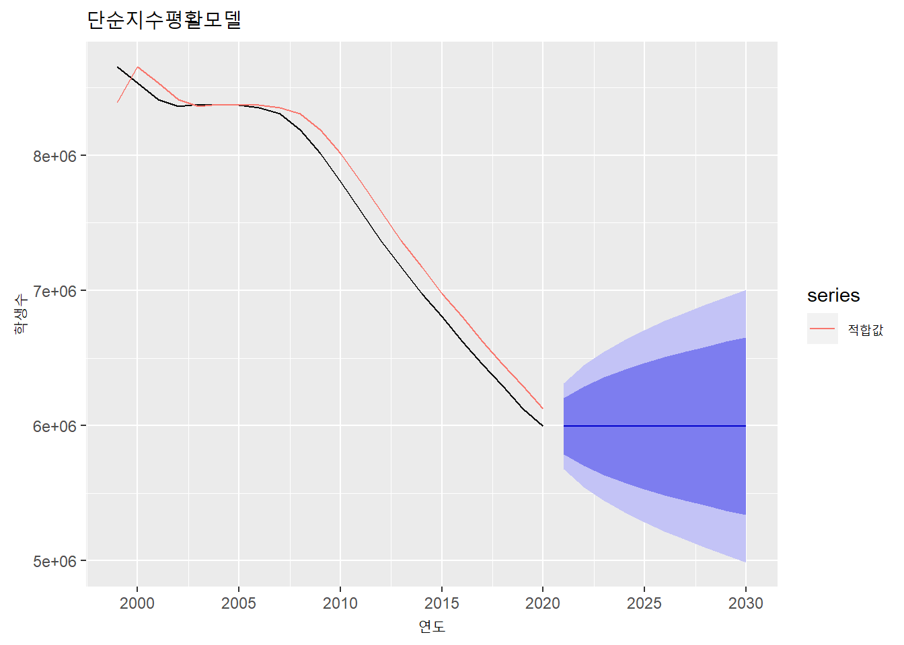
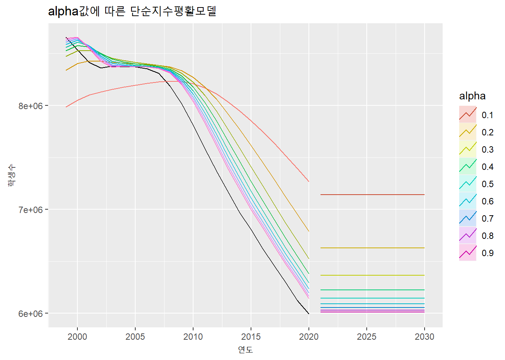
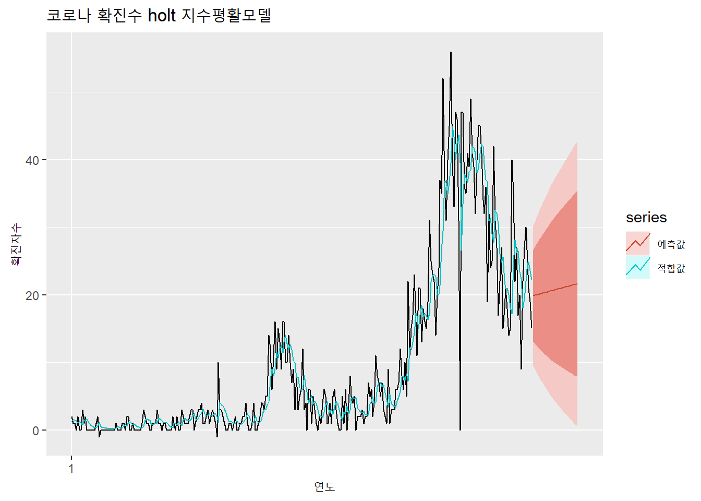
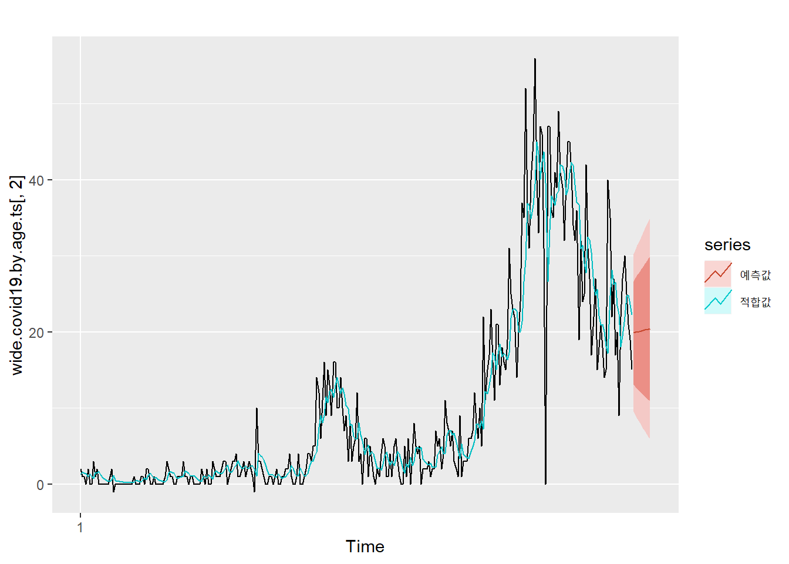
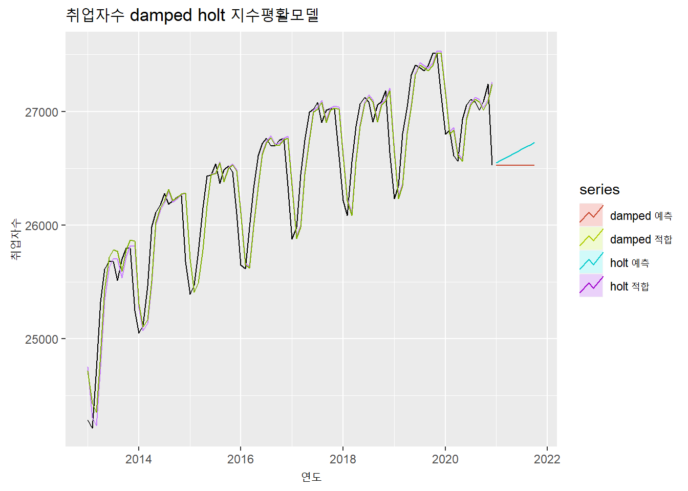
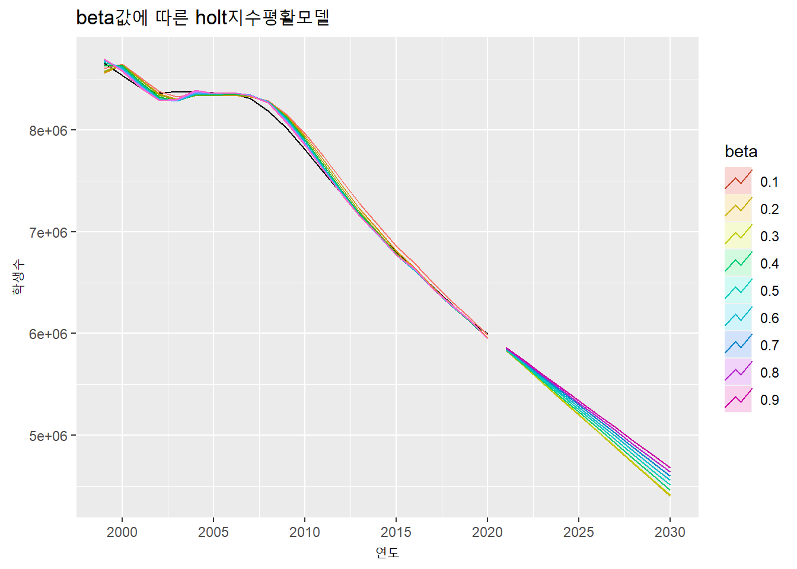

6.3 지수 평활(Exponential Smoothing) 모델
지수평활 모델은 1950년대에 제안된 모델로 랜덤 워크(Random Walk) 모델과 같이 시계열 적으로 최근의 값이 유지될 확률이 크다는 점에서 나온 모델이다. 다만 랜덤 워크 모델과 같이 마지막 값에 모든 가중치를 둬서 일정하게 유지하는 것이 아닌 현재와 가까운 과거에 더 많은 가중치를 주고 이들의 이동 평균값을 구해서 예측하는 방법이다.13
최근의 데이터에 가중치를 높게 주기 때문에 추세, 계절성, 순환성이 심하지 않은 단기 데이터의 모델링에 적합한 방법이다. 추세나 계절성이 없는 데이터에 적합한 ’단순 지수평활 모델(Simple Exponential Smoothign), 추세가 있는 데이터에 적합한 홀트(Holt) 모델, 추세와 계절성이 있는 데이터에 적합한 홀트-윈터(Holt-Winter) 모델 등이 있다.
지수 평활 모델에서 핵심적인 변수는 평활 계수이다. 평활 매개변수는 앞서 설명한 현재와 가까운 과거에 할당하는 가중치를 의미한다. 평활 매개변수은 보통 0에서 1사이의 변수인데 홀트 모델이나 홀트-윈터 모델에서는 추가적인 계수가 추가될 수 있다. 이고 이 가중치를 어떻게 설정하는 가에 따라 예측 모델의 성능도 달라질 수 있다.
필자는 처음 이 모델을 접했을때 왜 지수(Exponential)과 평활(Smoothing) 이라는 이름을 사용했는지 궁금했다. 평활 매개변수를 설명하는 과정에서 명칭에서 지수를 붙인 이유는 설명이 되겠지만 아직도 평활이라는 이름을 붙인 이유는 명쾌하게 이해되지는 않는다. 시계열 데이터에 대한 추세선을 부드럽게, 스무딩하게 만드는 모델이라고 생각이 되나 사실 홀트-윈터 모델을 보면 별로 부드럽지 않다는 느낌이 들어서 이 부분에 대해 잘 아시는 분은 알려주시길 부탁드린다.
6.3.1 단순 지수 평활 모델(Simple Exponentail Smoothing Model)
단순 지수 평활 모델은 추세, 계절성 등의 시계열적 특성이 비교적 약한 데이터에 적합한 예측 모델이다. 단순 지수 평활 모델을 사용하기 위해서는 우선 평활 계수를 설정해아한다.
평활 계수는 과거치에 대한 가중치로 현재에 가장 가까운 첫번째 과거 데이터에 대한 가중치이다. 이후 가중치 들은 1에서 가중치를 뺀 가중치(1-평활계수)로 설정하고 과거로 계속 갈수록 (1-평활계수)를 계속 곱해서 가중치를 할당한다. 평활 계수를 0.5로 가정하고 학생수 예에 적용해 보면 다음의 표와 같이 가중치가 설정되게 된다. 평활 계수가 지수형태로 계산되기 때문에 평활계수의 합은 1이 될 수 없다.
| 연도 | 가중치(평활계수 = 0.5) |
|---|---|
| 2020 | 0.5 |
| 2019 | 0.25 = (1 - 0.5) |
| 2018 | 0.125 = (1 - 0.5) * (1 - 0.5) |
| 2017 | 0.0625 = (1 - 0.5) * (1 - 0.5) * (1 - 0.5) |
| … | … |
단순 지수 평활 모델을 적용하는 방법은 forecast 패키지의 ses() 함수를 사용하면 모델을 구축할 수 있다. ses() 함수에서는 평활 계수를 alpha 매개변수를 통해 설정할 수 있지만 설정하지 않으면 자동으로 계산하여 설정해준다. ses() 함수는 뒤에서 설명하는 홀트 모델, 홀트-윈터 모델도 beta와 gamma 매개변수를 통해 생성할 수 있다. ses() 함수를 통해 생성되는 모델은 몇가지 특성값을 가지는데 앞에서 설명한 평활계수가 alpha로 표현되고 초기상태값인 l 값이 나타난다. 단순 지수 평활 모델은 한단계씩 예측해나가는 방법(One Step Forecast)이기 때문에 초기값인 l값부터 시작하여 한단계 앞 값을 예측하고 또 다음 단계를 예측하는 방법으로 수행된다. l 값을 산출하는 방법은 Rob Hyndman의 저서에서 확인할 수 있다.14 이는 ses() 모델을 summary() 함수를 통해 실행시키면 확인이 가능하다.
ses(students.total.ts[,3])## Point Forecast Lo 80 Hi 80 Lo 95 Hi 95
## 2021 2693721 2552247 2835196 2477355 2910088
## 2022 2693721 2493657 2893786 2387749 2999694
## 2023 2693721 2448697 2938746 2318989 3068454
## 2024 2693721 2410794 2976649 2261021 3126421
## 2025 2693721 2377401 3010042 2209951 3177492
## 2026 2693721 2347211 3040232 2163779 3223664
## 2027 2693721 2319448 3067995 2121319 3266123
## 2028 2693721 2293607 3093836 2081799 3305644
## 2029 2693721 2269336 3118106 2044681 3342762
## 2030 2693721 2246381 3141062 2009573 3377870autoplot(students.total.ts[,3]) +
autolayer(fitted(ses(students.total.ts[,3])), series = 'ses 적합값') +
autolayer(ses(students.total.ts[,3]))
summary(ses(students.total.ts[,3]))##
## Forecast method: Simple exponential smoothing
##
## Model Information:
## Simple exponential smoothing
##
## Call:
## ses(y = students.total.ts[, 3])
##
## Smoothing parameters:
## alpha = 0.9999
##
## Initial states:
## l = 3992517.6433
##
## sigma: 110392.9
##
## AIC AICc BIC
## 582.8254 584.1587 586.0985
##
## Error measures:
## ME RMSE MAE MPE MAPE MASE ACF1
## Training set -59042.1 105255.5 87631.13 -1.838867 2.620738 0.9836978 0.8081078
##
## Forecasts:
## Point Forecast Lo 80 Hi 80 Lo 95 Hi 95
## 2021 2693721 2552247 2835196 2477355 2910088
## 2022 2693721 2493657 2893786 2387749 2999694
## 2023 2693721 2448697 2938746 2318989 3068454
## 2024 2693721 2410794 2976649 2261021 3126421
## 2025 2693721 2377401 3010042 2209951 3177492
## 2026 2693721 2347211 3040232 2163779 3223664
## 2027 2693721 2319448 3067995 2121319 3266123
## 2028 2693721 2293607 3093836 2081799 3305644
## 2029 2693721 2269336 3118106 2044681 3342762
## 2030 2693721 2246381 3141062 2009573 3377870ses(students.total.ts[,3], alpha = 0.5)## Point Forecast Lo 80 Hi 80 Lo 95 Hi 95
## 2021 2710069 2453771 2966366 2318095 3102042
## 2022 2710069 2423519 2996618 2271829 3148308
## 2023 2710069 2396169 3023968 2230001 3190136
## 2024 2710069 2371019 3049119 2191536 3228601
## 2025 2710069 2347609 3072528 2155734 3264403
## 2026 2710069 2325622 3094515 2122108 3298029
## 2027 2710069 2304826 3115311 2090304 3329833
## 2028 2710069 2285047 3135090 2060054 3360083
## 2029 2710069 2266148 3153989 2031150 3388987
## 2030 2710069 2248021 3172116 2003428 3416709ses(students.total.ts[,3], alpha = 0.5) %>% autoplot()
autoplot(employees.ts[,2]) +
autolayer(fitted(ses(employees.ts[,2])), series = 'ses 적합값') +
autolayer(ses(employees.ts[,2]))
평활 계수가 클수록 데이터 변화에 빠르게 반응하여 예측의 감응도가 높지만 평활계수가 작으면 데이터의 변화에 느리게 반응하여 예측의 안정성이 높아진다15
autoplot(students.total.ts[,3], series = '원본', color = 'black') +
autolayer(fitted(ses(students.total.ts[,3], alpha = 0.1)), PI = FALSE, series = 'alpha = 0.1') +
autolayer(fitted(ses(students.total.ts[,3], alpha = 0.2)), PI = FALSE, series = 'alpha = 0.2') +
autolayer(fitted(ses(students.total.ts[,3], alpha = 0.3)), PI = FALSE, series = 'alpha = 0.3') +
autolayer(fitted(ses(students.total.ts[,3], alpha = 0.4)), PI = FALSE, series = 'alpha = 0.4') +
autolayer(fitted(ses(students.total.ts[,3], alpha = 0.5)), PI = FALSE, series = 'alpha = 0.5') +
autolayer(fitted(ses(students.total.ts[,3], alpha = 0.6)), PI = FALSE, series = 'alpha = 0.6') +
autolayer(fitted(ses(students.total.ts[,3], alpha = 0.7)), PI = FALSE, series = 'alpha = 0.7') +
autolayer(fitted(ses(students.total.ts[,3], alpha = 0.8)), PI = FALSE, series = 'alpha = 0.8') +
autolayer(fitted(ses(students.total.ts[,3], alpha = 0.9)), PI = FALSE, series = 'alpha = 0.9')
6.3.2 홀트(Holt) 모델
홀트(holt) 모델은 지수 평활 모델을 확장하여 추세를 반영하는 모델이다. 홀트 모델은 추세조정 지수평활법이나 이중 지수 평활법으로 해석되기도 한다. 추세를 반영하기 위해 평활 계수인 alpha와 추세 기울기 값 beta를 사용하여 모델을 세운다. 평활 계수 값과 마찬가지로 추세 기울기 값도 0과 1사이의 값을 지니고 이 값을 반영한 이동평균을 통해 예측값을 산출한다.
홀트 모델은 앞선 단순 지수 평활 모델에 사용했던 ses() 함수에 추세 기울기 값인 beta 값을 추가하여 사용할 수도 있고 forecast 패키지에서 제공하는 holt() 함수를 사용하여 모델을 생성할 수도 있다. 다만 alpha, beta 등의 매개변수를 지정하지 않으면 자동 계산되어 적절한 값이 사용된다.
autoplot(students.total.ts[,3]) +
autolayer(fitted(holt(students.total.ts[,3])), series = 'holt 적합값') +
autolayer(holt(students.total.ts[,3]))
summary(holt(students.total.ts[,3]))##
## Forecast method: Holt's method
##
## Model Information:
## Holt's method
##
## Call:
## holt(y = students.total.ts[, 3])
##
## Smoothing parameters:
## alpha = 0.9999
## beta = 0.288
##
## Initial states:
## l = 4343612.7635
## b = -29866.4656
##
## sigma: 131515.5
##
## AIC AICc BIC
## 592.2109 595.9609 597.6661
##
## Error measures:
## ME RMSE MAE MPE MAPE MASE ACF1
## Training set 1053.799 118960.2 90931.13 0.1951923 2.642304 1.020742 0.08553976
##
## Forecasts:
## Point Forecast Lo 80 Hi 80 Lo 95 Hi 95
## 2021 2670530 2501987 2839074 2412764.8 2928296
## 2022 2647340 2372523 2922158 2227043.8 3067637
## 2023 2624151 2241959 3006342 2039639.7 3208662
## 2024 2600961 2106233 3095689 1844339.6 3357582
## 2025 2577771 1964343 3191199 1639614.2 3515928
## 2026 2554581 1816072 3293090 1425129.2 3684033
## 2027 2531391 1661464 3401318 1200952.4 3861830
## 2028 2508201 1500660 3515742 967300.1 4049102
## 2029 2485011 1333836 3636187 724440.3 4245582
## 2030 2461821 1161174 3762469 472653.3 4450990holt(employees.ts[,2]) %>% autoplot()
holt(employees.ts[,3]) %>% autoplot()
autoplot(wide.covid19.by.age.ts[,2]) +
autolayer(fitted(holt(wide.covid19.by.age.ts[,2])), series = '적합값') +
autolayer(holt(wide.covid19.by.age.ts[,2]), series = '예측값')
홀트 모델은 위와 같이 일정한 증가, 감소가 나타난다. 추세가 증가 추세이면 예측값이 계속 증가하게 되고 감소추세이면 계속 감소하게 된다. 특히 감소추세 일때 계속 감소하면 어느 순간 음수값을 가질수도 있다. 따라서 감소 추세가 있는 경우 어느정도에서 감소추세를 지연시킬 필요가 있다. holt() 함수에서는 damped 매개변수를 통해 감소추세를 지연시킬 수 있다.
autoplot(students.total.ts[,3]) +
autolayer(fitted(holt(students.total.ts[,3])), series = 'holt') +
autolayer(fitted(holt(students.total.ts[,3], damped = TRUE)), series = 'holt damped') +
autolayer(holt(students.total.ts[,3]), series = '예측', PI = FALSE) +
autolayer(holt(students.total.ts[,3], damped = TRUE), series = 'damped 예측', PI = FALSE)
autoplot(employees.ts[,2]) +
autolayer(fitted(holt(employees.ts[,2])), series = 'holt') +
autolayer(fitted(holt(employees.ts[,2], damped = TRUE)), series = 'holt damped') +
autolayer(holt(employees.ts[,2]), series = '예측', PI = FALSE) +
autolayer(holt(employees.ts[,2], damped = TRUE), series = 'damped 예측', PI = FALSE)
추세 기울기 값에 따른 변동은 아래 plot과 같이 나타난다. 사실상 추세 기울기 값은 결과값에 큰 차이를 나타내지 않는다.
autoplot(employees.ts[,2]) +
autolayer(fitted(holt(employees.ts[,2], beta = 0.1)), PI = FALSE, series = 'beta = 0.1') +
autolayer(fitted(holt(employees.ts[,2], beta = 0.2)), PI = FALSE, series = 'beta = 0.2') +
autolayer(fitted(holt(employees.ts[,2], beta = 0.3)), PI = FALSE, series = 'beta = 0.3') +
autolayer(fitted(holt(employees.ts[,2], beta = 0.4)), PI = FALSE, series = 'beta = 0.4') +
autolayer(fitted(holt(employees.ts[,2], beta = 0.5)), PI = FALSE, series = 'beta = 0.5') +
autolayer(fitted(holt(employees.ts[,2], beta = 0.6)), PI = FALSE, series = 'beta = 0.6') +
autolayer(fitted(holt(employees.ts[,2], beta = 0.7)), PI = FALSE, series = 'beta = 0.7') +
autolayer(fitted(holt(employees.ts[,2], beta = 0.8)), PI = FALSE, series = 'beta = 0.8') +
autolayer(fitted(holt(employees.ts[,2], beta = 0.9)), PI = FALSE, series = 'beta = 0.9')
6.3.3 홀트-윈터(Holt-Winter) 모델
홀트-윈터(Holt-Winter) 모델은 단순 지수 평활 모델을 확장하여 추세와 계절성을 반영하는 모델이다. 홀트-윈터 모델은 ses 모델의 alpha, 홀트 모델의 beta에 계절 매개변수인 gamma까지 포함하기 때문에 삼중 지수 평활법이나 계절조정 지수 평활법이라고도 한다.
홀트-윈터 모델도 앞선 홀트 모델과 같이 ses() 함수에 추세 기울기 값인 beta 값과 계절 변수인 gamma 값을 추가하여 사용할 수도 있고 forecast 패키지에서 제공하는 hw() 함수를 사용하여 모델을 생성할 수도 있다. 다만 alpha, beta 등의 매개변수를 지정하지 않으면 자동 계산되어 적절한 값이 사용된다.
홀트-윈터 모델은 가산법(additive)와 승산법(multiplicative)의 두가지 방법이 있다.
autoplot(employees.ts[,2]) +
autolayer(fitted(hw(employees.ts[,2])), series = 'hw 적합값') +
autolayer(hw(employees.ts[,2], seasonal = 'additive'), PI = FALSE, series = 'additive') +
autolayer(hw(employees.ts[,2], seasonal = 'multiplicative'), PI = FALSE, series = 'multiplicative')
summary(hw(employees.ts[,2]))##
## Forecast method: Holt-Winters' additive method
##
## Model Information:
## Holt-Winters' additive method
##
## Call:
## hw(y = employees.ts[, 2])
##
## Smoothing parameters:
## alpha = 0.9985
## beta = 0.0147
## gamma = 1e-04
##
## Initial states:
## l = 25433.0105
## b = 35.8063
## s = -214.0764 256.3016 260.68 226.9136 162.9304 313.7855
## 278.5719 219.3763 -4.9043 -297.3507 -579.3511 -622.8768
##
## sigma: 134.5373
##
## AIC AICc BIC
## 1395.828 1403.674 1439.422
##
## Error measures:
## ME RMSE MAE MPE MAPE MASE
## Training set -14.96946 122.8152 78.83536 -0.0580682 0.301646 0.2487293
## ACF1
## Training set 0.07031624
##
## Forecasts:
## Point Forecast Lo 80 Hi 80 Lo 95 Hi 95
## Jan 2021 26132.22 25959.80 26304.64 25868.53 26395.91
## Feb 2021 26190.42 25944.97 26435.88 25815.03 26565.82
## Mar 2021 26487.18 26184.42 26789.93 26024.15 26950.20
## Apr 2021 26794.28 26442.17 27146.39 26255.78 27332.78
## May 2021 27033.23 26636.73 27429.74 26426.83 27639.63
## Jun 2021 27107.08 26669.61 27544.55 26438.02 27776.14
## Jul 2021 27156.96 26681.05 27632.87 26429.11 27884.80
## Aug 2021 27020.82 26508.41 27533.22 26237.16 27804.47
## Sep 2021 27099.44 26552.09 27646.80 26262.34 27936.55
## Oct 2021 27147.90 26566.85 27728.95 26259.27 28036.53
## Nov 2021 27158.21 26544.51 27771.91 26219.63 28096.78
## Dec 2021 26702.45 26056.97 27347.94 25715.27 27689.63
## Jan 2022 26308.32 25631.78 26984.86 25273.65 27342.99
## Feb 2022 26366.53 25659.58 27073.48 25285.34 27447.71
## Mar 2022 26663.28 25926.46 27400.09 25536.41 27790.14
## Apr 2022 26970.38 26204.17 27736.59 25798.56 28142.20
## May 2022 27209.33 26414.14 28004.53 25993.19 28425.48
## Jun 2022 27283.18 26459.36 28107.00 26023.26 28543.10
## Jul 2022 27333.06 26480.94 28185.18 26029.85 28636.27
## Aug 2022 27196.92 26316.77 28077.07 25850.85 28542.99
## Sep 2022 27275.54 26367.62 28183.47 25886.99 28664.10
## Oct 2022 27324.00 26388.51 28259.49 25893.29 28754.71
## Nov 2022 27334.31 26371.45 28297.17 25861.74 28806.88
## Dec 2022 26878.55 25888.49 27868.61 25364.38 28392.72autoplot(employees.ts[,3]) +
autolayer(fitted(hw(employees.ts[,3])), series = 'hw 적합값') +
autolayer(hw(employees.ts[,3], seasonal = 'additive'), PI = FALSE, series = 'additive') +
autolayer(hw(employees.ts[,3], seasonal = 'multiplicative'), PI = FALSE, series = 'multiplicative')
summary(hw(employees.ts[,3]))##
## Forecast method: Holt-Winters' additive method
##
## Model Information:
## Holt-Winters' additive method
##
## Call:
## hw(y = employees.ts[, 3])
##
## Smoothing parameters:
## alpha = 0.9993
## beta = 1e-04
## gamma = 1e-04
##
## Initial states:
## l = 1803.8967
## b = 1.4736
## s = 4.0914 11.645 10.8291 12.0963 5.0654 13.0499
## 15.2957 6.1821 -5.524 -14.7346 -27.3353 -30.661
##
## sigma: 22.6819
##
## AIC AICc BIC
## 1054.015 1061.862 1097.609
##
## Error measures:
## ME RMSE MAE MPE MAPE MASE
## Training set -1.794203 20.70565 16.09606 -0.1054265 0.878707 0.3190346
## ACF1
## Training set 0.01039296
##
## Forecasts:
## Point Forecast Lo 80 Hi 80 Lo 95 Hi 95
## Jan 2021 1743.702 1714.634 1772.770 1699.246 1788.158
## Feb 2021 1748.476 1707.380 1789.571 1685.625 1811.326
## Mar 2021 1762.544 1712.216 1812.873 1685.574 1839.515
## Apr 2021 1773.212 1715.098 1831.326 1684.334 1862.090
## May 2021 1786.372 1721.398 1851.346 1687.002 1885.742
## Jun 2021 1796.939 1725.761 1868.117 1688.082 1905.797
## Jul 2021 1796.151 1719.268 1873.035 1678.568 1913.735
## Aug 2021 1789.618 1707.422 1871.813 1663.911 1915.325
## Sep 2021 1798.101 1710.916 1885.286 1664.763 1931.439
## Oct 2021 1798.296 1706.391 1890.201 1657.739 1938.853
## Nov 2021 1800.569 1704.173 1896.964 1653.144 1947.993
## Dec 2021 1794.467 1693.780 1895.153 1640.480 1948.453
## Jan 2022 1761.168 1656.364 1865.971 1600.884 1921.451
## Feb 2022 1765.941 1657.176 1874.706 1599.599 1932.283
## Mar 2022 1780.010 1667.422 1892.598 1607.821 1952.199
## Apr 2022 1790.677 1674.391 1906.964 1612.833 1968.522
## May 2022 1803.838 1683.966 1923.709 1620.510 1987.165
## Jun 2022 1814.405 1691.052 1937.757 1625.753 2003.056
## Jul 2022 1813.617 1686.878 1940.356 1619.786 2007.447
## Aug 2022 1807.083 1677.045 1937.121 1608.207 2005.960
## Sep 2022 1815.567 1682.311 1948.823 1611.769 2019.365
## Oct 2022 1815.761 1679.362 1952.160 1607.157 2024.366
## Nov 2022 1818.034 1678.562 1957.506 1604.731 2031.337
## Dec 2022 1811.932 1669.453 1954.411 1594.030 2029.834